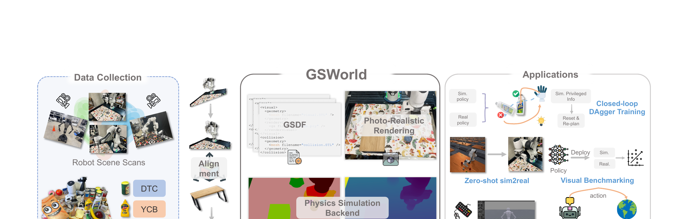

GSWorld: Closed-Loop Photo-Realistic Simulation Suite for Robotic Manipulation
Jiang 等 · 2025 技术报告 · arXiv:2510.20813 · Zotero FPZLYZEA
GSWorld 不只渲染一段固定相机轨迹，而是把对象级 3DGS 外观与可碰撞/可运动资产绑定，接入现有物理模拟器，让机器人策略每执行一步都能得到相应的照片级新观测。
§1 Introduction：照片级数字孪生怎样从 demo renderer 变成闭环机器人平台
机器人数据来源各有缺口：simulation 有精确动作和可并行物理，却视觉不真；人类视频视觉真实却没有目标机器人 action；真实遥操作最对齐但昂贵。已有 GS simulator 多服务单场景渲染或开环数据合成，缺少统一资产格式、物理接口与 real-to-sim-to-real 闭环。
GSWorld 定义 GSDF（Gaussian Scene Description File），把 Gaussian-on-Mesh 外观、metric geometry、相机和 physics 属性装进可复用资产；同一环境可做 RL、imitation、虚拟遥操作、视觉 benchmark 和闭环 DAgger。所谓 closed-loop 不只是策略在 sim 中反馈控制，还包括真实部署失败回流数字孪生采 corrective data，再重新训练。
展开原文 · 核心定位
“couples 3D Gaussian Splatting with physics”
§2 Related Work：Real2Sim、Gaussian 资产与机器人数据闭环
mesh-based simulator 易做碰撞但纹理制作成本高；NeRF/GS 提升真实重建，却常与特定引擎、特定场景绑定。SplatSim 证明了 GS appearance shell 可以随 physics body 运动，GSWorld 将这个想法工程化为 engine-facing GSDF，并保持 metric scale、相机与 action semantics。
它还把 Real-to-Sim 从一次重建扩展为数据循环：真实场景变数字孪生，sim 并行训练或收集纠错，策略再回真实验证。相比生成式 WAM，它提供显式可交互环境和可重复测试；但对象动力学来自物理引擎参数，不会从视频自动发现新因果规律。
§3 “闭环”比 novel-view 更难
§4 可交互 GS 资产

1. 采集并重建真实场景
获得背景和对象的高保真外观。
输入是什么：已经采集的专家演示、机器人交互轨迹或评测样本。每条数据通常包含观测、动作，以及可能存在的奖励或下一状态。
这一步究竟做什么：本步骤执行“采集并重建真实场景”。具体来说，获得背景和对象的高保真外观。 它把真实世界素材转换为既能渲染外观、又能与物理模块对齐的数字表示。
输出到哪里：结构化保存的数据或中间特征，后续训练可以反复读取。这个结果会交给下一步“对象化并绑定物理资产”继续处理。
为什么不能省略：学习算法只能从它见过的经历中改进；这一步决定训练数据是否覆盖成功、失败和恢复状态。
2. 对象化并绑定物理资产
分离可动对象，建立 pose/geometry 对应。
输入是什么：来自上一步“采集并重建真实场景”的产物：结构化保存的数据或中间特征，后续训练可以反复读取。本步骤还会按论文设置读取当前条件、时间步或训练信号。
这一步究竟做什么：本步骤执行“对象化并绑定物理资产”。具体来说，分离可动对象，建立 pose/geometry 对应。 它把真实世界素材转换为既能渲染外观、又能与物理模块对齐的数字表示。
输出到哪里：一个可渲染或可交互的数字场景表示。这个结果会交给下一步“物理引擎推进状态”继续处理。
为什么不能省略：只复制外观不能产生可信交互；需要把视觉表示与碰撞、关节或动力学对应起来，策略训练才有物理意义。
3. 物理引擎推进状态
碰撞、抓取和对象移动仍由 simulator 决定。
输入是什么：来自上一步“对象化并绑定物理资产”的产物：一个可渲染或可交互的数字场景表示。本步骤还会按论文设置读取当前条件、时间步或训练信号。
这一步究竟做什么：本步骤执行“物理引擎推进状态”。具体来说，碰撞、抓取和对象移动仍由 simulator 决定。 这里处理的只是整条链路中的一个接口：把上一步的结果整理成下一步能够正确读取和继续计算的形式。
输出到哪里：经过本步骤处理、含义更明确的中间结果。这个结果会交给下一步“渲染下一闭环观察”继续处理。
为什么不能省略：只复制外观不能产生可信交互；需要把视觉表示与碰撞、关节或动力学对应起来，策略训练才有物理意义。
4. 渲染下一闭环观察
给 RGB 策略持续交互。
输入是什么：来自上一步“物理引擎推进状态”的产物：经过本步骤处理、含义更明确的中间结果。本步骤还会按论文设置读取当前条件、时间步或训练信号。
这一步究竟做什么：本步骤执行“渲染下一闭环观察”。具体来说，给 RGB 策略持续交互。 这里处理的只是整条链路中的一个接口：把上一步的结果整理成下一步能够正确读取和继续计算的形式。
输出到哪里：经过本步骤处理、含义更明确的中间结果。这是图中这条链路的最终产物，随后会进入真实执行、模型更新或指标评测。
为什么不能省略：机器人动作会改变下一次观测；只有执行后重新读取现实，才能发现预测误差并阻止错误连续累积。
§5 为什么比单一 GS 场景更像 simulator
真正有用的抽象是“状态可编辑”：同一真实资产能被重排、组合、替换，并在机器人动作后更新视觉。GSWorld 把 3DGS 从静态展示格式推进成控制系统的观测后端。
§6 支持什么
§7 边界
GS 外观无法自动给出质量、摩擦、关节、柔性和接触参数；对象分离、不可见面补全与动态光照也会限制真实感。
§8 实验归因与复现：平台主张要靠接口和闭环证据
最小可信复现清单
- 公开 GSDF schema、Gaussian/mesh 绑定、尺度恢复与对象分割。
- 记录 physics engine、solver、碰撞几何、材质和控制 API。
- 测渲染 FPS、并行环境数、仿真步频与端到端训练吞吐。
- 对 RL、IL、DAgger 分别给出 mesh-render 与 GS-render 对照。
- 真实部署报告 calibration drift、未建模对象和动态背景失败。
GSWorld 的价值在“可交互资产 + 数据闭环”，不是更高 PSNR；它让真实场景成为可重复训练和评测基础设施。